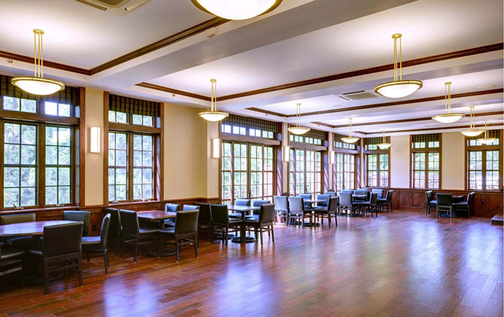
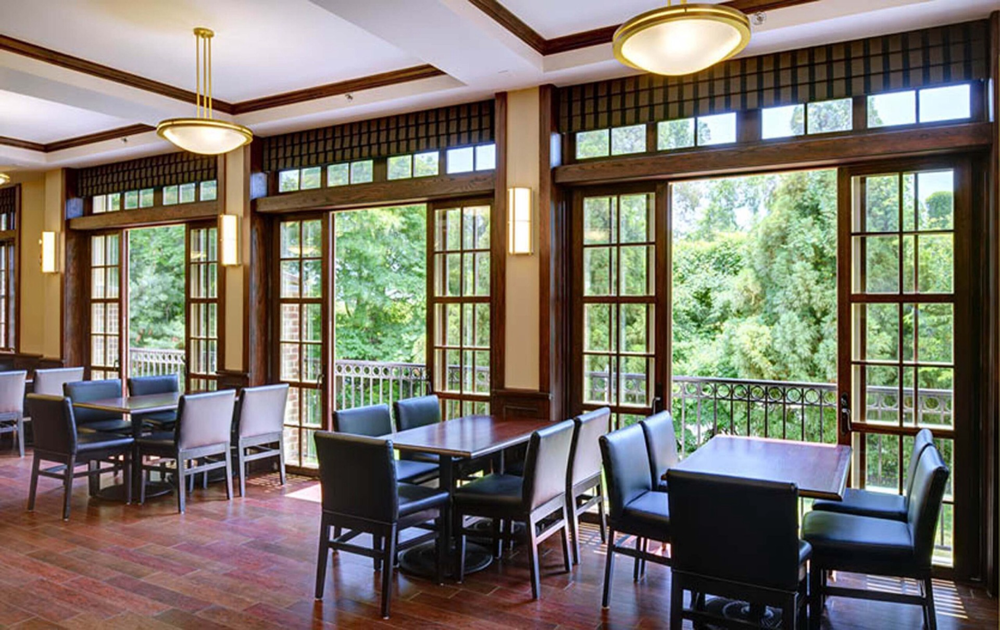
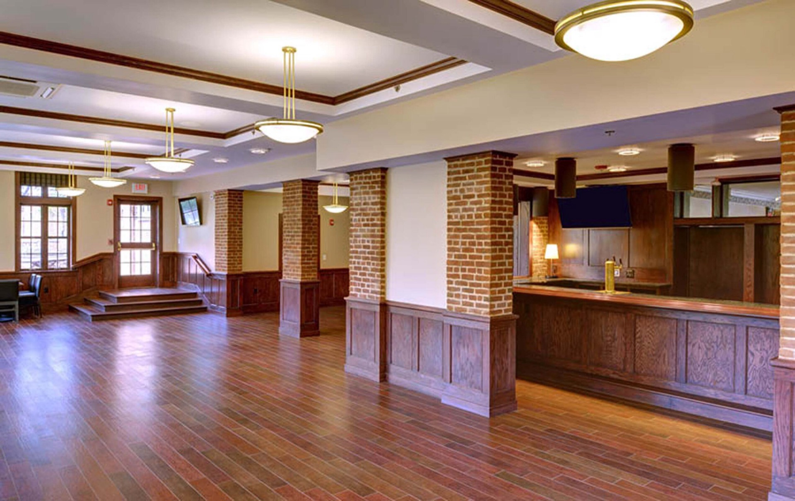
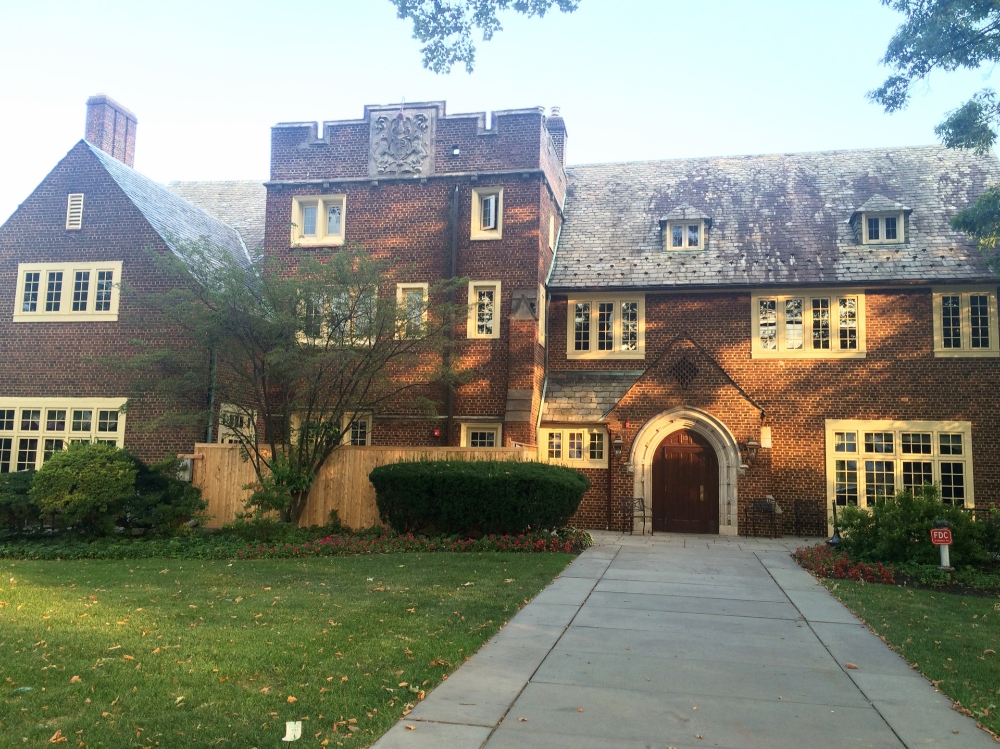

The table
Three meals a day with people you actually want to eat with, cooked in-house and served in one of the best rooms on the Street.

07Join Tower
Tower is an upper-class eating club for Princeton juniors and seniors. Come to a meal, meet members, and see if it feels like home.
01Why Tower

Three meals a day with people you actually want to eat with, cooked in-house and served in one of the best rooms on the Street.

Around 220 juniors and seniors from every corner of campus, with a social calendar that runs all year.

125 years of tradition and an alumni network that’s glad to hear from you, long after graduation.
02How It Works
Recruitment dates are announced each year. Sign up below and we’ll email you when the schedule is set.
Open meals let sophomores eat at Tower with members during the year. It’s the easiest way to see what the club is like.
Come to social events and study breaks, and get to know the people you’d be sharing a table with.
When recruitment opens, follow the schedule we email out. The Membership Chair is there to answer questions the whole way.
03Questions
Princeton’s eating clubs are independent, member-run houses on Prospect Avenue where juniors and seniors take their meals and much of their social life. Tower has been one since 1902.
Princeton undergraduates join as sophomores for their junior and senior years. Members come from every residential college, major and corner of campus.
No. The sign-up just puts you on the email list for open meals, social events and the recruitment schedule.
Yes. Open meals and events during the year are the best way to see the house and meet members. Sign up below and we’ll tell you when they’re happening.
Princeton’s financial aid can be applied toward eating club costs. For specifics about Tower’s dues, reach out to the Membership Chair or the Treasurer.
The first floor is wheelchair accessible. If you have any access needs for a meal or event, let us know ahead of time and we’ll make arrangements.

04Recruitment List
We’ll email you about open meals, social events and the recruitment schedule. Signing up doesn’t commit you to anything.